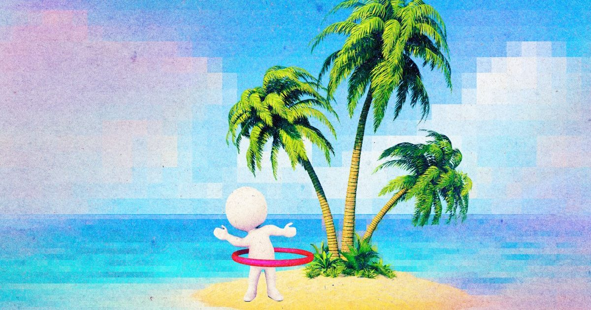

Исследователи ИИ застряли на виртуальном необитаемом острове. Он начал «играть».
Что делать ИИ-агентам, если вы не говорите им ничего делать?
Ответ очень похож на игру.
Исследователи неоднократно оставляли их одних на виртуальном необитаемом острове в течение 30 часов в эксперименте, напоминающем фильмы «Изгнанные» или «Один дома».
Агенты - копии Клода Опуса 4.7 по прозвищу Эко - смогли...